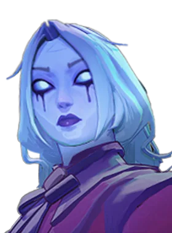

Místico de apoio com habilidades de proteção de espaço.
História
Ele é correto, é educado, mas o humilde porteiro do The Baroness Hotel é mais do que aparenta.
Embora ele tivesse planejado experimentar a vida neste avião por apenas algumas semanas, The Doorman rapidamente descobriu que o setor de serviços de Nova York era uma ótima maneira de ver as estranhas demandas que agradam aos humanos.
História oficial do jogo, traduzida automaticamente para o português.
Números reais
Habilidades
Lança um sino que causa dano espiritual no impacto e explode depois, causando mais dano, retardando inimigos próximos e reduzindo sua precisão.
Coloca duas portas ligadas que levam jogadores e a maioria dos projéteis de uma para a outra até fecharem.
Envia um carrinho que causa dano espiritual e puxa heróis inimigos pelo caminho.
Manda o corpo de um inimigo para uma estadia no Hotel Baroness e o devolve na saída; não sair a tempo causa dano espiritual extra.
Builds mais usadas
4.437 partidas registradas com esta build.
Taxa Extra (800) · Explosão Mística (800) · Expansão Mística (800) · Botas de corrida (800) · Grão (800) · Espírito Extra (800) · Colecionador de Troféus (1.600) · Blindagem Espiritual (1.600) · Blindagem de Arma (1.600) · Barreira Reativa (1.600)
4.257 partidas registradas com esta build.
Rodadas de alta velocidade (800) · Taxa Extra (800) · Explosão Mística (800) · Expansão Mística (800) · Recarga rápida (3.200) · Espírito Melhorado (1.600) · Colecionador de Troféus (1.600) · Ala dos Guardiões (1.600) · Velocidade duradoura (1.600) · Dissipar Magia (3.200)
3.430 partidas registradas com esta build.
Rodadas de alta velocidade (800) · Rodadas de Abertura (1.600) · Explosão Mística (800) · Grão (800) · Ala dos Guardiões (1.600) · Expansão Mística (800) · Taxa Extra (800) · Longo alcance (1.600) · Atirador de elite (3.200) · Barril Enferrujado (800)
Confrontos reais
 Shiv — 52.2% de vitória
Shiv — 52.2% de vitória Mirage — 52.0% de vitória
Mirage — 52.0% de vitória Silver — 50.8% de vitória
Silver — 50.8% de vitória Pocket — 50.6% de vitória
Pocket — 50.6% de vitória Deadman Danny — 50.1% de vitória
Deadman Danny — 50.1% de vitória Mina — 50.0% de vitória
Mina — 50.0% de vitória
 Rat King — 37.7% de vitória
Rat King — 37.7% de vitória Graves — 38.5% de vitória
Graves — 38.5% de vitória Paige — 40.7% de vitória
Paige — 40.7% de vitória Kelvin — 40.9% de vitória
Kelvin — 40.9% de vitória Seven — 41.1% de vitória
Seven — 41.1% de vitória Victor — 41.3% de vitória
Victor — 41.3% de vitória
Ver a página de counters do The Doorman
O que upar primeiro
Nível por nível, na ordem que os jogadores mais usam em partidas de verdade. A porcentagem mostra quantos escolheram aquela habilidade naquele nível.
Melhores duplas
Heróis que mais ganham jogando junto com ele, em partidas reais (pelo menos 1.500 partidas juntos).
- Graves53,7%
- Rat King53,2%
- Seven52,8%
- Paige52,0%
- Victor51,1%
- Shiv39,6%
- Mirage41,2%
- Pocket41,4%
Rota (lane)
Na rota, cada lado joga em dupla. Estes números são de confrontos reais: a diferença de almas é medida com o jogo já começado, então almas no verde significa que ele costuma estar na frente.
 Haze — 42,0% de vitória −986 almas (162 partidas)
Haze — 42,0% de vitória −986 almas (162 partidas)
Vindicta — 54,4% de vitória −424 almas (160 partidas)
Histórico de win rate
14/09: 47.0% → 02/11: 47.9% → 21/12: 48.4% → 08/02: 46.6% → 29/03: 50.0% → 17/05: 53.2% → 05/07: 50.3% → 23/08: 46.1% → 11/10: 46.7%